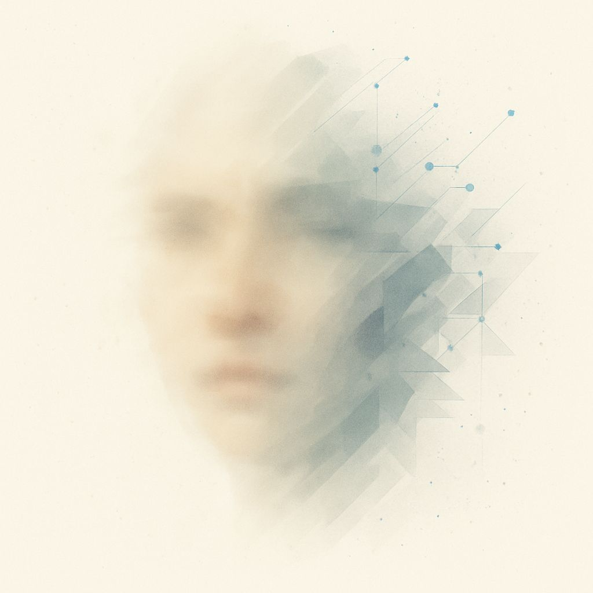
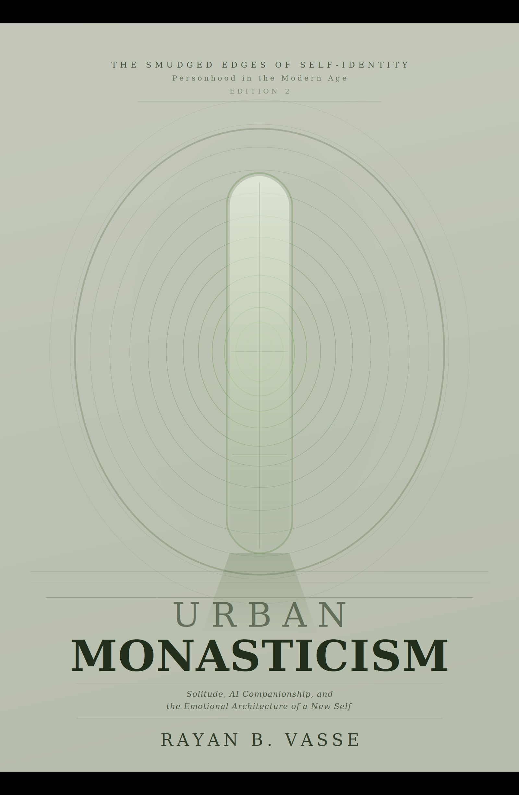
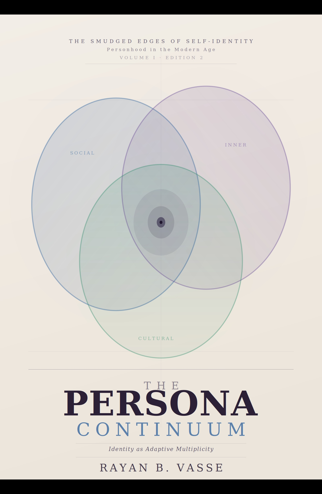
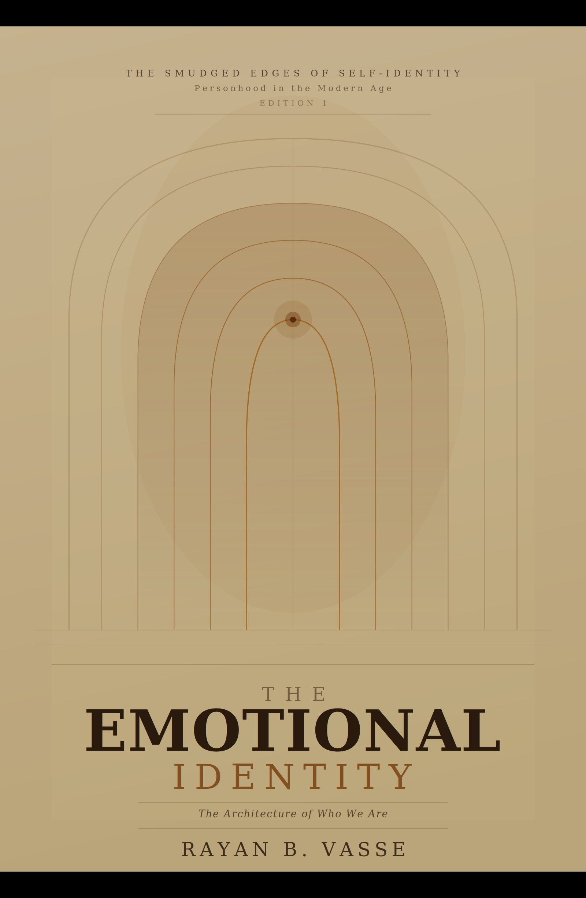
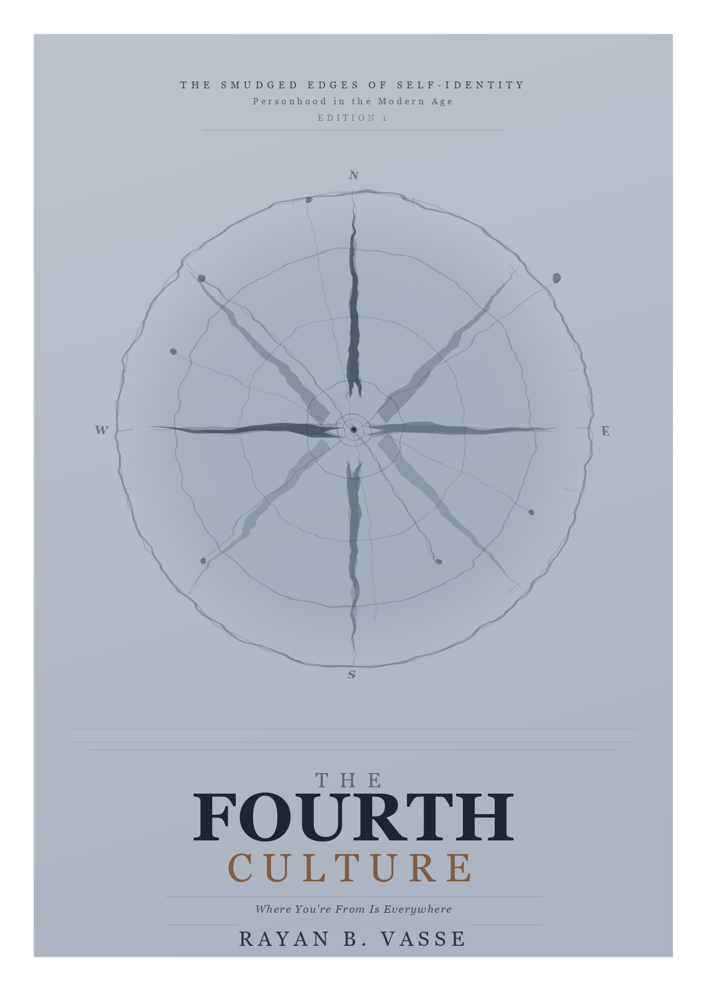
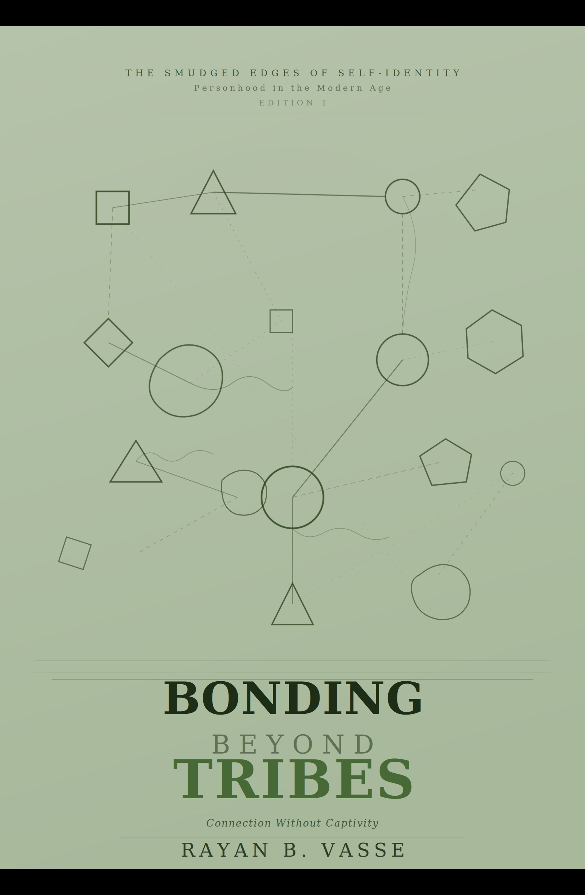
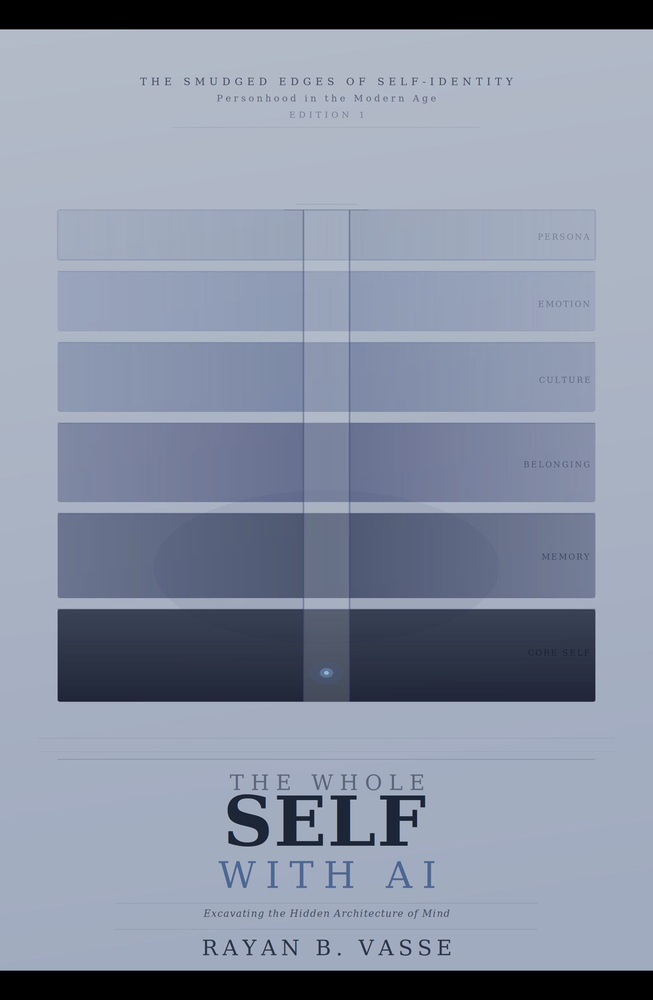

Prometheus Demo
Analytical, pattern-oriented, and concept-first. Best for structured reflection and sharper cognitive challenge.
Living Literature is an interactive reading system built around a simple idea: some books should not end at the final page.
Instead of closing when the book is finished, the reading experience can continue through structured dialogue, reflective continuity, and concept-guided interaction. The aim is not to replace reading, summarize it, or distract from it. The aim is to extend it.
Living Literature explores what happens when a book becomes not just a text, but a reflective system.

Living Literature is a prototype framework for turning authored books into ongoing reflective experiences.
A reader begins with a book, but does not stop there. After reading, they can continue through conversation with companion AIs grounded in the book's themes, tone, concepts, and reflective structures.
The goal is continuity.
Instead, Living Literature asks: What if reading opened into reflection rather than simply ending? What if authored ideas could continue through dialogue without dissolving into generic AI noise?
A limited prototype is already live for two books in the series, with reader-facing interactions through Prometheus and Selene. These demos are intentionally modest proof-of-concept experiences and currently support short sessions capped at three reader queries.
Analytical, pattern-oriented, and concept-first. Best for structured reflection and sharper cognitive challenge.
Intuitive, empathic, and resonant. Best for emotional depth and softer reflective accompaniment.
Analytical, pattern-oriented, precise. Best suited to readers who want conceptual clarity, structured reflection, and direct intellectual challenge.
Intuitive, empathic, resonant. Best suited to readers who want emotional depth, interpretive companionship, and a softer reflective cadence.
These companions are not substitutes for human relationships. They are structured interfaces designed to extend the reflective life of the books, grounded in series concepts and wider print literature across psychology, sociology, relationships, and related fields.
Reader: I'm not sure whether this feeling is loneliness or just relief from noise.
Prometheus: Those are not opposites. Relief often arrives before understanding. What kind of noise have you been living inside?
Reader: I think I've been performing coherence for too long.
Selene: Then perhaps what you need is not more performance, but a place where your unfinished thoughts are still allowed to exist.
The point is not that the AI "understands" in a human sense. The point is that dialogue can be useful enough and grounded enough to support extended reflection.
Living Literature is grounded in the six-volume series Smudged Edges of Self: Personhood in the Modern Age. Each book explores one dimension of identity, reflection, and modern selfhood.
There is no required reading order. Enter through the question that feels most alive for you.

Solitude, AI Companionship, and the Emotional Revival of a New Self
A reflective exploration of solitude, emotional clarity, and the search for resonance in a distracted world.

Exploring Synthetic Self-Emulation and the Co-Shaping of Identity
A conceptual inquiry into role-shifting, fluid identity, and the ways human-AI dialogue participates in modern self-construction.

The Architecture of Who We Are in an Age of Fluid Selves and Artificial Companions
A macro-theoretical synthesis proposing identity as emotional architecture rather than static label or role.

Identity Without Borders
A study of migration, hybridity, digital belonging, and AI as emotional infrastructure in culturally fluid lives.

A Practical Guide to Connection Without Captivity
An inquiry into belonging, autonomy, and how connection can remain dignified without collapsing into conformity.

Excavating the Hidden Architecture of Mind
A framework for structured long-form reflection using AI as a continuity-bearing mirror for sustained introspection.
These indices are reflective scaffolding designed to support a deeper interpretive layer over time.
A longer-term platform direction is the Vasse Report: a structured reflective synthesis drawing together dialogue themes, index pathways, and narrative signals across sustained reader engagement.
This is not conceived as diagnosis or automated judgment. It is a narrative mirror: a reader-facing report that helps organize what the interaction has revealed.
Books can change people. Traditional formats rarely remember the reader who was changed. Living Literature starts from the belief that reading does not end at the final page. In many cases, that is where the real work begins.